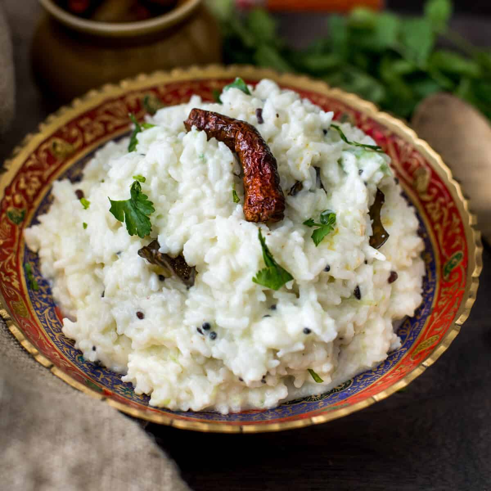

Curd Rice

A easy comfort meal
Curd rice is a very simple dish to prepare and it a perfect meal during hot Summer days.
What you'll need:
- Rice(cold)
- Curd
- Mustard seeds
- Curry leaves
- Shallots(chopped finely)
- Oil
- Dry red chillies
Directions:
- Mix Curd with cold rice
- Add water if necessary
- Add Salt per your taste
- In a pan add Oil
- Add Mustard Seeds
- After they start popping,add Curry leaves
- Then add Shallots, dry chillies
- Finally pour the hot oil mixture over curd and rice
- Done! Enjoy as it is or refrigerate and serve
Go Home for more recipes